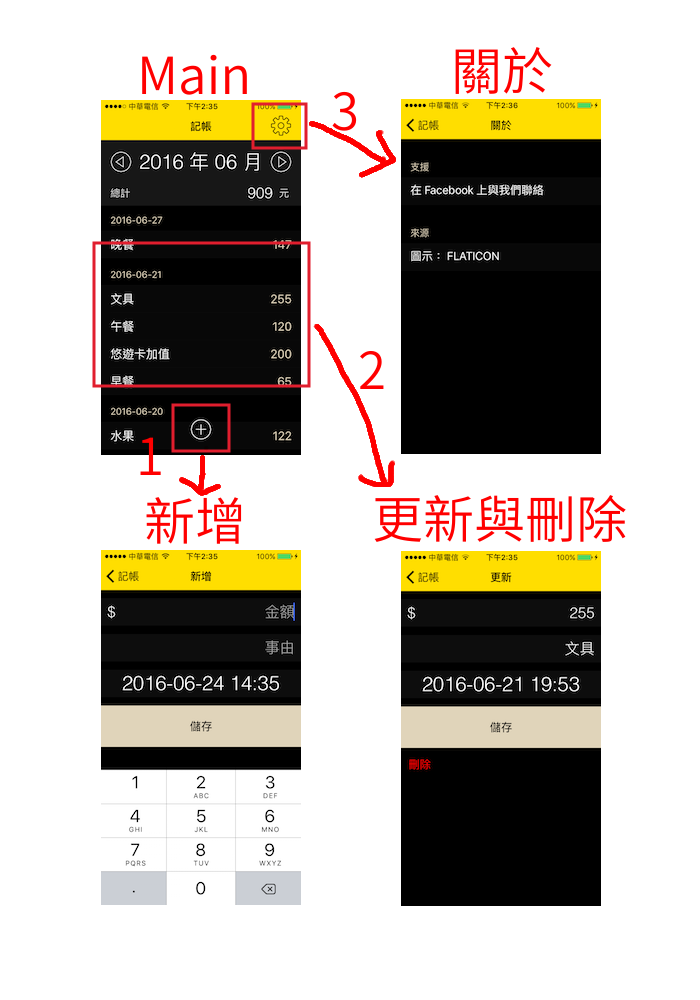

規劃與實作
請先在 Xcode 打開這個專案( apps/money/Money )以供後續與文章內容比對檢視，本小節說明僅會提示部分內容，不會將所有程式碼都寫出來，請以專案程式碼為主。
首先介紹記帳應用程式可以操作的動作，先看下圖流程：

上圖從 Main 為首頁開始，依序可以操作如下的動作：
- 新增：在首頁點擊下方的加號，即可新增花費記錄，需要填寫的欄位為金額、事由及時間。
- 列表、更新與刪除：首頁會以月為單位列出所有花費記錄，依日期由新到舊排序，點擊其中一筆記錄可以更新或刪除。更新頁的左下方有刪除按鈕以供刪除這筆記錄。
- 關於：點擊首頁右上角關於，可以進入關於頁。可以前往支援網頁與來源網頁。
前置作業
首先在 Xcode 裡，新建一個 Single View Application 類型的專案，取名為 Money 。
這個專案會使用 SQLite 來儲存與操作資料，請依照 SQLite 的內容依序建立需要的檔案與功能。設定完後，專案應該新增好以下檔案：
- SQLiteConnect.swift：將操作 SQLite 的程式碼封裝起來的類別。
在寫程式碼之前，先依照程式之外的設定的步驟設定好。以及將需要的 Swift 檔案、圖示檔案都先加入至專案中：
- PostViewController.swift
- MoreViewController.swift
- icons 目錄中的四個圖示檔案
AppDelegate.swift
在進入應用程式的畫面前，需要在 AppDelegate.swift 中先做些設定：
建立資料表
儲存一個值dbInit在 UserDefaults 中來辨識是否建立過資料表，當第一次進入應用程式時會建立資料表，欄位如下：
- id ：整數，單筆記錄的識別碼，會自動增加( auto increment )。
- title ：字串，單筆記錄的事由。
- amount ：浮點數，單筆記錄的金額。
- yearMonth ：字串，單筆記錄的時間，格式為年月，像是
2016-05。 - createDate ：字串，單筆記錄的時間，格式為年月日，像是
2016-05-12。 - createTime ：DateTime，單筆記錄的時間，格式為年月日時分，像是
2016-05-12 12:36。
初始設定
- 設置導覽列的一些預設樣式。
- 依照導覽控制器 UINavigationController 的說明，將根視圖設為一個 UINavigationController ，並指定 ViewController 為第一個視圖控制器。
首頁
先注意以下 ViewController 的屬性：
- 建立
days存放這個月份哪幾天有記錄，同時也是 UITableView 的 section 數量以及標題。 - 建立
myRecords存放單日的每筆記錄。 - 建立
eachDayAmount存放每日金額小計。
在 ViewController 的viewDidLoad()中依序建立：
- 導覽列右上角的前往關於頁面按鈕。
- 目前顯示的年月 UILabel 。
- 切換不同月份的往前與往後按鈕。
- 目前月份的總金額 UILabel 。
- 目前月份的花費記錄列表 UITableView 。
- 底部的新增記錄按鈕。
在viewWillAppear(_:)中則是依據存在 UserDefaults 的一個值displayYearMonth來分辨目前要顯示的月份列表，這個值在新增或更新記錄時才會有值，用以顯示剛更新好的紀錄的月份列表。
點擊新增按鈕後執行的addBtnAction()方法與點選各記錄項目後執行的委任方法，都同樣會開啟 PostViewController 頁面，不同的是會在 UserDefaults 中儲存一個值postID，這個值設為0時是新增，設為記錄 id時則是更新。
新增,更新與刪除
PostViewController 中會新增一個結構( Struct )來存放記錄資訊，完成動作要儲存時也是以這個結構的值為主，如下：
struct Record {
var id :Int = 0
var title :String?
var amount :Double?
var yearMonth :String?
var createDate :String?
var createTime :String?
}
在 PostViewController 的viewDidLoad()中，先取得 UserDefaults 的值postID來分辨目前是新增或更新。新增時在屬性record中存放預設值，更新時則是將這筆記錄的原始資料存入，以供後續使用與顯示。
刪除按鈕只有在更新記錄時才會顯示。按下刪除按鈕後，會顯示一個 UIAlertController 來確認刪除動作。
關於 頁面
這頁使用 UITableView 的 .grouped 特性各別列出不同的功能：
- 前往外部 Facebook 網頁。
- 前往外部 圖示資源 網頁。
前往外部網頁時，使用下列方式：
let requestUrl = URL(string:
"https://www.facebook.com/swiftgogogo")
UIApplication.shared.open(requestUrl!)
範例
此應用程式範例程式碼放在 apps/money/Money
你也可以在 App Store 中找到這個應用程式，名稱為記帳 。